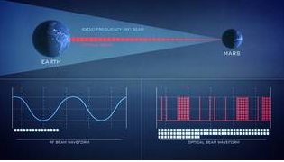

Laser Communications: Empowering More Data Than Ever Before
Launching this summer, NASA’s Laser Communications Relay Demonstration (LCRD) will showcase the dynamic powers of laser communications technologies. With NASA’s ever-increasing human and robotic presence in space, missions can benefit from a new way of “talking” with Earth.
Since the beginning of spaceflight in the 1950s, NASA missions have leveraged radio frequency communications to send data to and from space. Laser communications, also known as optical communications, will further empower missions with unprecedented data capabilities.
Why Lasers?
As science instruments evolve to capture high-definition data like 4K video, missions will need expedited ways to transmit information to Earth. With laser communications, NASA can significantly accelerate the data transfer process and empower more discoveries.
Laser communications will enable 10 to 100 times more data transmitted back to Earth than current radio frequency systems. It would take roughly nine weeks to transmit a complete map of Mars back to Earth with current radio frequency systems. With lasers, it would take about nine days.
Additionally, laser communications systems are ideal for missions because they need less volume, weight, and power. Less mass means more room for science instruments, and less power means less of a drain of spacecraft power systems. These are all critically important considerations for NASA when designing and developing mission concepts.
“LCRD will demonstrate all of the advantages of using laser systems and allow us to learn how to use them best operationally,” said Principal Investigator David Israel at NASA’s Goddard Space Flight Center in Greenbelt, Maryland. “With this capability further proven, we can start to implement laser communications on more missions, making it a standardized way to send and receive data.
How it Works?
Both radio waves and infrared light are electromagnetic radiation with wavelengths at different points on the electromagnetic spectrum. Like radio waves, infrared light is invisible to the human eye, but we encounter it every day with things like television remotes and heat lamps.
Missions modulate their data onto the electromagnetic signals to traverse the distances between spacecraft and ground stations on Earth. As the communication travels, the waves spread out.
The infrared light used for laser communications differs from radio waves because the infrared light packs the data into significantly tighter waves, meaning ground stations can receive more data at once. While laser communications aren’t necessarily faster, more data can be transmitted in one downlink.
Laser communications terminals in space use narrower beam widths than radio frequency systems, providing smaller “footprints” that can minimize interference or improve security by drastically reducing the geographic area where someone could intercept a communications link. However, a laser communications telescope pointing to a ground station must be exact when broadcasting from thousands or millions of miles away. A deviation of even a fraction of a degree can result in the laser missing its target entirely. Like a quarterback throwing a football to a receiver, the quarterback needs to know where to send the football, i.e. the signal, so that the receiver can catch the ball in stride. NASA’s laser communications engineers have intricately designed laser missions to ensure this connection can happen.
Laser Communications Relay Demonstration
Located in geosynchronous orbit, about 22,000 miles above Earth, LCRD will be able to support missions in the near-Earth region. LCRD will spend its first two years testing laser communications capabilities with numerous experiments to refine laser technologies further, increasing our knowledge about potential future applications.
LCRD’s initial experiment phase will leverage the mission’s ground stations in California and Hawaii, Optical Ground Station 1 and 2, as simulated users. This will allow NASA to evaluate atmospheric disturbances on lasers and practice switching support from one user to the next. After the experiment phase, LCRD will transition to supporting space missions, sending and receiving data to and from satellites over infrared lasers to demonstrate the benefits of a laser communications relay system.
The first in-space user of LCRD will be NASA’s Integrated LCRD Low-Earth Orbit User Modem and Amplifier Terminal (ILLUMA-T), which is set to launch to the International Space Station in 2022. The terminal will receive high-quality science data from experiments and instruments onboard the space station and then transfer this data to LCRD at 1.2 gigabits per second. LCRD will then transmit it to ground stations at the same rate.
LCRD and ILLUMA-T follow the groundbreaking 2013 Lunar Laser Communications Demonstration, which downlinked data over a laser signal at 622 megabits-per-second, proving the capabilities of laser systems at the Moon. NASA has many other laser communications missions currently in different stages of development. Each of these missions will increase our knowledge about the benefits and challenges of laser communications and further standardize the technology.